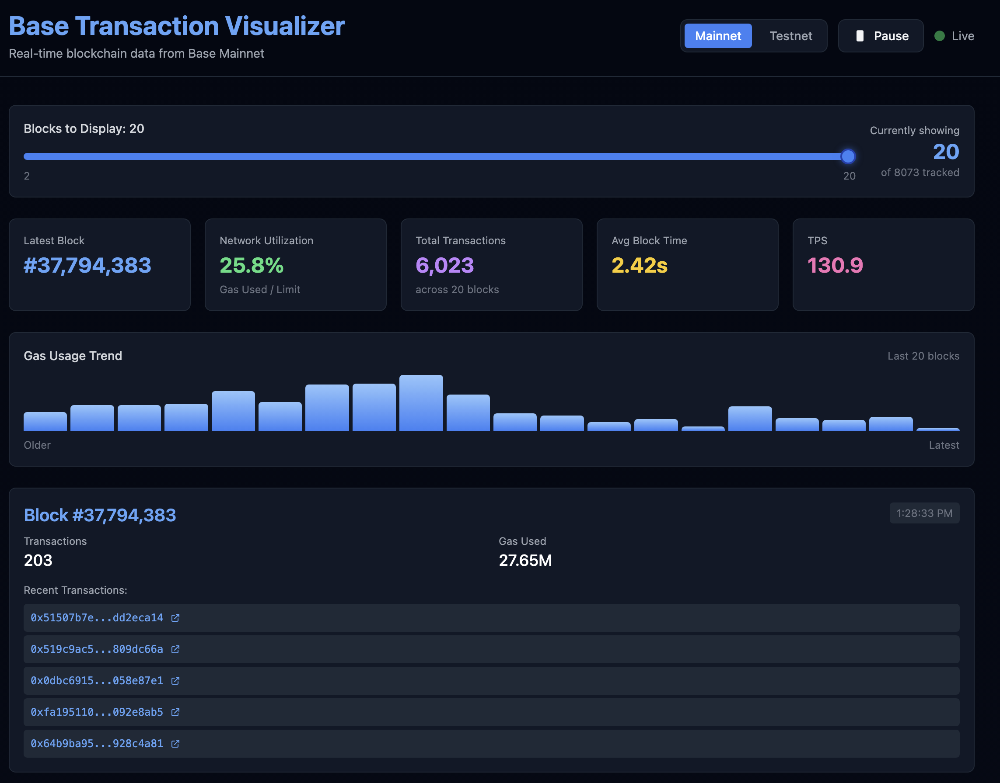

Base Transaction Visualizer
Part of Blockchain Excursion | November 5, 2025
What It Does
A real-time web application that visualizes live blocks and transactions on the BASE network (Layer 2). The app displays:
- Block numbers and timestamps
- Number of transactions per block
- Gas usage and gas limits
- Transaction hashes with explorer links
- Network metrics (TPS, block time, utilization)
Key Features
- Dual Network Support: Simultaneously supports Base Mainnet and Sepolia Testnet with instant switching
- Smart Caching: Caches up to 20 blocks per network for instant switching without lag
- Real-time Metrics: Shows TPS (transactions per second), block time, and network utilization
- Interactive Controls: Slider to adjust visible blocks (2-20), pause/resume live feed
- Explorer Integration: Transaction hashes link directly to block explorer
Tech Stack
Frontend Framework
- Next.js 14: Using the App Router for modern React development
- TypeScript: Type-safe development throughout
- Tailwind CSS: Utility-first styling for responsive design
Blockchain Integration
- ethers.js v6: Primary SDK for blockchain interaction
- JSON-RPC: Direct connection to Base network endpoints
-
Network RPCs:
- Mainnet:
https://mainnet.base.org - Sepolia Testnet:
https://sepolia.base.org
- Mainnet:
Architecture & Data Flow
Connection Management
The application maintains two persistent RPC provider connections: one for mainnet and one for testnet. This dual-connection approach enables instant network switching without reconnection delays.
Polling Strategy
Every ~2 seconds, the app polls both networks for new blocks. This polling interval balances real-time updates with performance considerations.
Caching System
The most recent ~20 blocks per network are cached in memory. This allows users to switch networks instantly and view historical data without waiting for new API calls.
Data Extraction
For each block, the system extracts:
- Block number (height in the blockchain)
- Timestamp (when the block was mined)
- Gas used vs. gas limit
- Transaction count
- Individual transaction hashes
UI Components
BlockCard.tsx
Displays individual block information in a card format. Shows key metrics like block number, timestamp, gas usage, and transaction count.
TxList.tsx
Lists recent transaction hashes from the selected blocks. Each hash is clickable and links to the corresponding transaction on the Base block explorer.
GasChart.tsx
Visualizes gas usage patterns across visible blocks. Helps identify network congestion and usage trends over time.
User Interface Features
- Block Slider: Adjust how many blocks to display (2-20 range)
- Pause/Resume: Control the live data feed to examine specific blocks
- Network Toggle: Instant switching between mainnet and testnet
- Transaction Links: Direct links to block explorer for detailed transaction info
- Responsive Design: Works seamlessly on desktop and mobile devices
Lay-Person Explanation
Imagine you're looking live at a highway of blockchain activity. Every "block" is like a batch of cars passing through toll booths. This app shows you in real time:
- How many "cars" (transactions) passed
- How "busy" the freeway is (gas usage)
- How fast blocks are being produced
You can switch between the "real highway" (mainnet) and a "test track" (testnet) instantly. It's entirely read-only; you're just watching, not controlling anything, and it's optimized specifically for the Base network.
Technical Highlights
Performance Optimization
- Efficient Polling: Balanced update frequency to minimize RPC calls while maintaining real-time feel
- Smart Caching: Prevents redundant API calls when switching networks or adjusting view
- Lazy Loading: Components render only visible data for better performance
Code Quality
- TypeScript throughout for type safety
- Component-based architecture for maintainability
- Separation of concerns (UI, data fetching, caching)
- Error handling for network issues and RPC failures
Why This Project Matters
- Real blockchain interaction: Demonstrates ability to work with actual blockchain networks via JSON-RPC
- Performance engineering: Shows understanding of caching, polling, and optimization strategies
- Modern web stack: Combines Next.js 14, TypeScript, and Tailwind with blockchain SDKs
- User experience: Creates an intuitive interface for complex blockchain data
- Base ecosystem: Specialized knowledge of Layer 2 scaling solutions
Future Enhancements
- Add support for additional Layer 2 networks
- Implement WebSocket connections for true real-time updates
- Add filtering by transaction type or gas price
- Include historical data analysis and trends
- Add alerts for specific network conditions